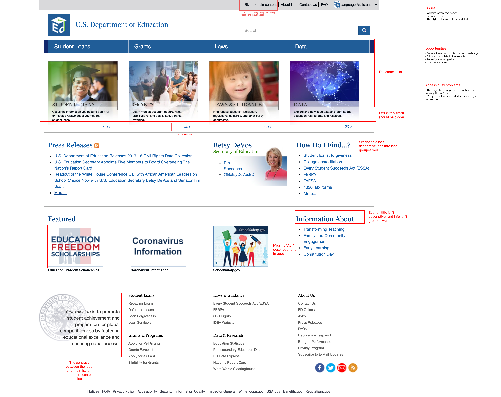
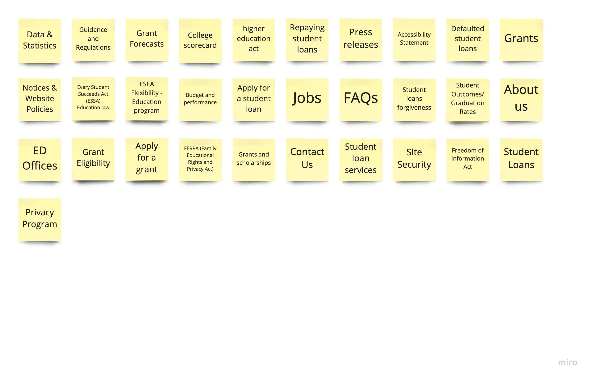
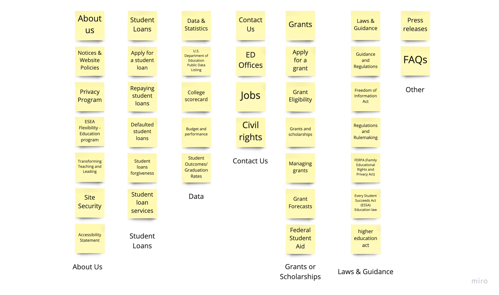
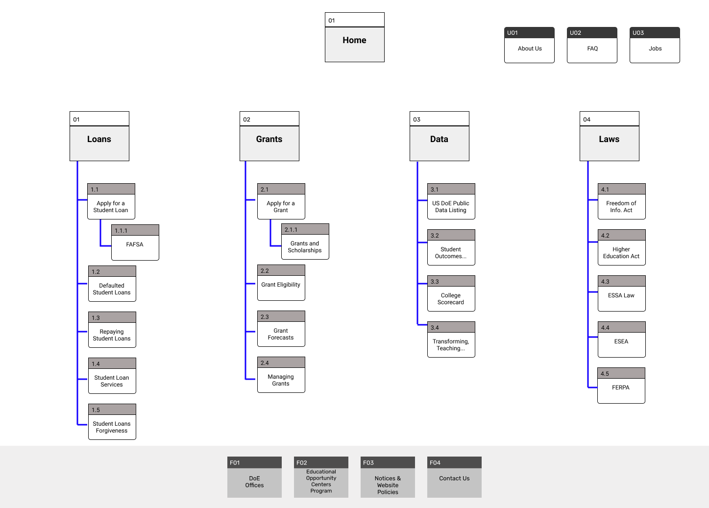
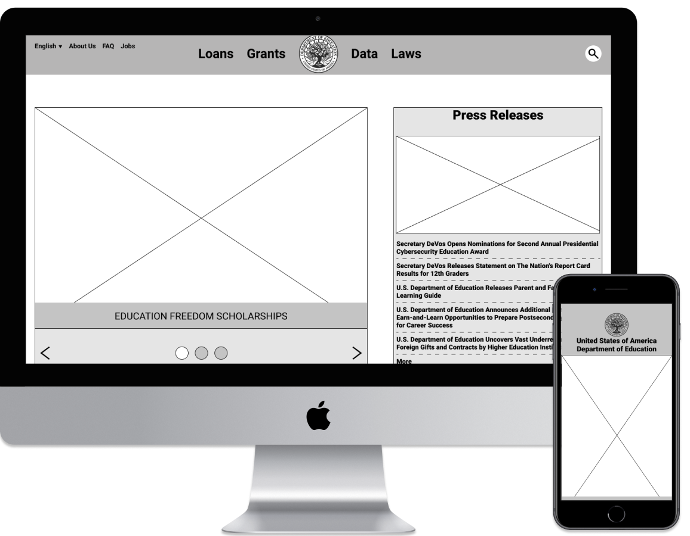
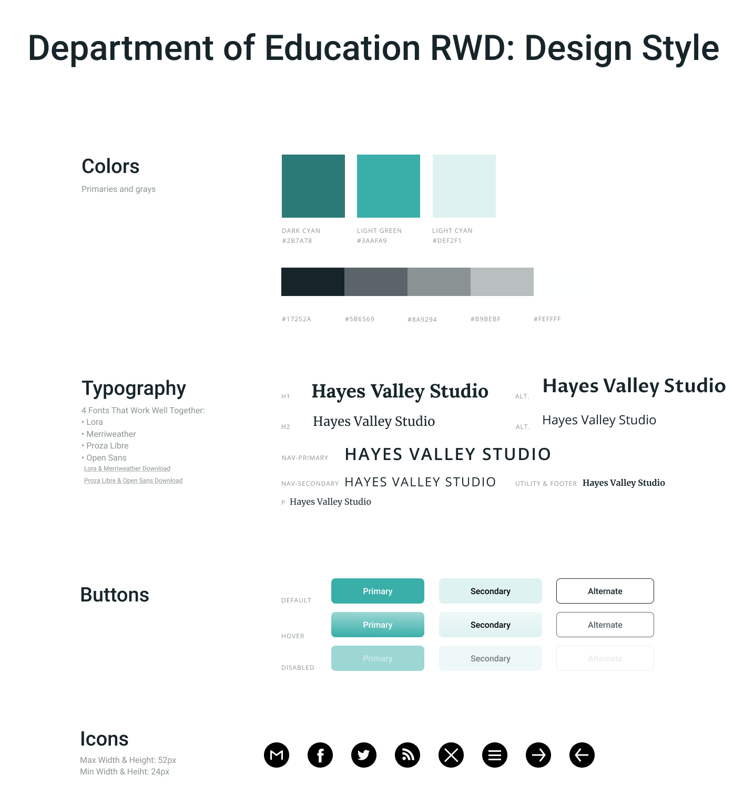
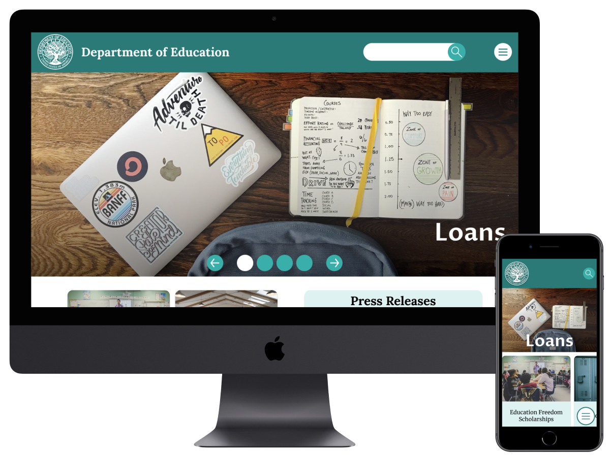

Deparment of Education
Government Redesign
Role: |
Tools: |
|
UI Researcher & Designer |
Miro & Figma |
Overview:
The US Department of Education website is a vital resource for financing one's post-secondary education; currently, there is a loss in engagement due to the current design of the website. The solution is an entire redesign that focuses on the following UI design guidelines while also keeping essentials assets.
Research
To understand what was required to make a redesign that would improve the engagement on the Department of Education's website, two actions were required: redline annotations and card sorting.
Redline Annotations:
Issues:
- Website is very text heavy
- Redundant links
- The style of the website is outdated
Opportunities:
- Reduce the amount of text on each webpage
- Add a color palette to the website
- Redesign the navigation
- Use more images
Click here to see the entire redline annotations
Card Sorting:
Tested four users to create groups of the 30+ cards
Click here to see the entire card sorting activity
Main Conclusion:
- The site navigation needed reorganization so users could easily progress through the website.
Card Sorting - Before
Card Sorting - After
Ideation
Sitemap:
The sitemap has categories that would be easy to navigate; the categories are loans, grants, data, and laws.
Prototype & Test
Lo-Fi Wireframes:
Click on the image to view the wireframes and test the prototype
Usability Testing:
Objective: |
To find the usability of the homepage and to prove the navigation is easy to use for both the desktop version and mobile. |
Task 1: |
Find the primary navigation bar on the homepage. |
Task 2: |
Complete the workflow of applying for a loan. |
Task 3: |
Repeat the task on the mobile version. |
Although all users were able to complete the tasks, one of the users initially did not register that the secondary navigation for the mobile prototype was a horizontal scrolling menu.
Style Guide:
Hi-Fi Wireframes:
Click on the image to view the wireframes and test the prototype
Video of Desktop Prototype:
Video of Mobile Prototype:
Conclusion
By finding the issue points of the original site, reorganizing the pages of the website, and creating a user-friendly style guide, the Department of Education could have a website that improves the amount of user engagement.